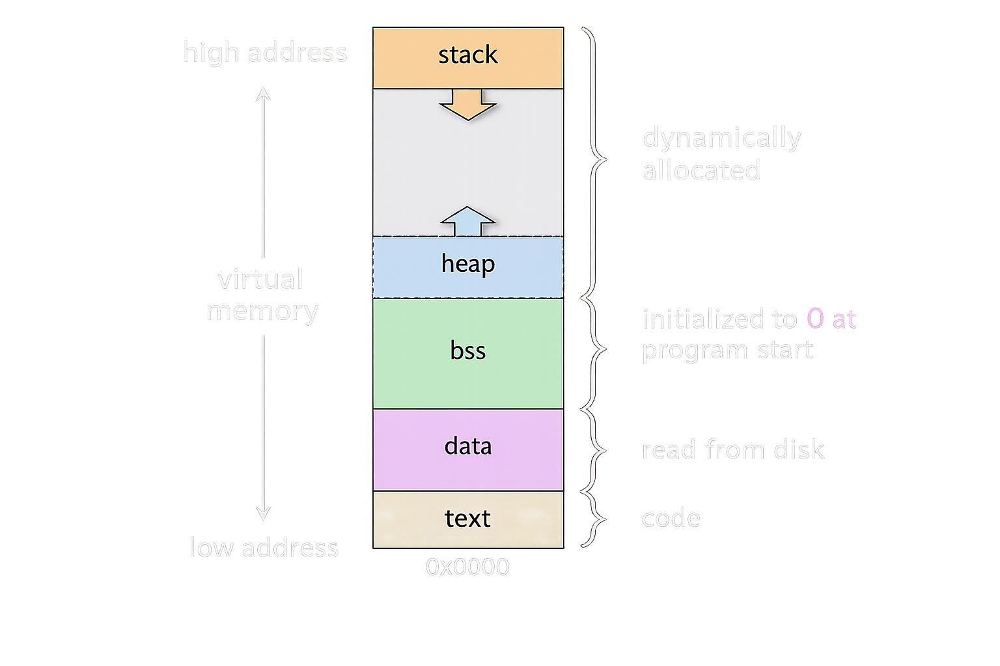
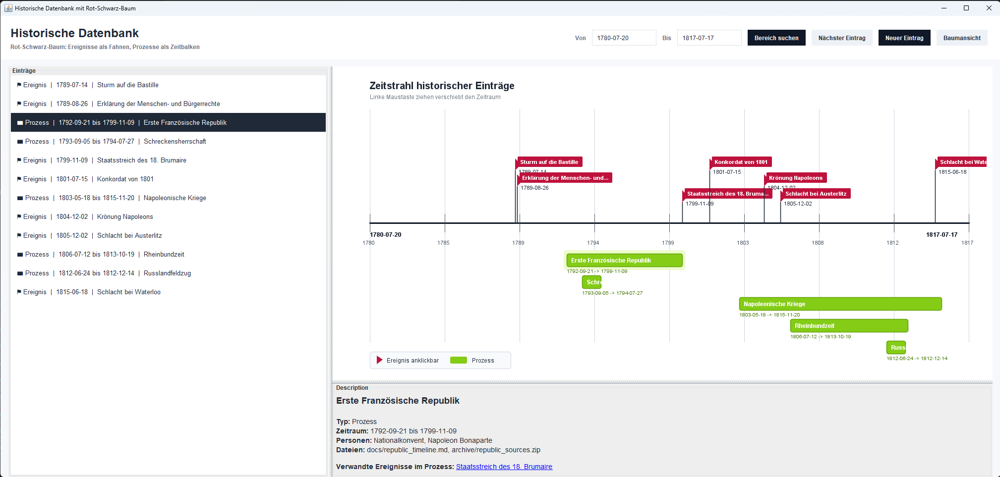
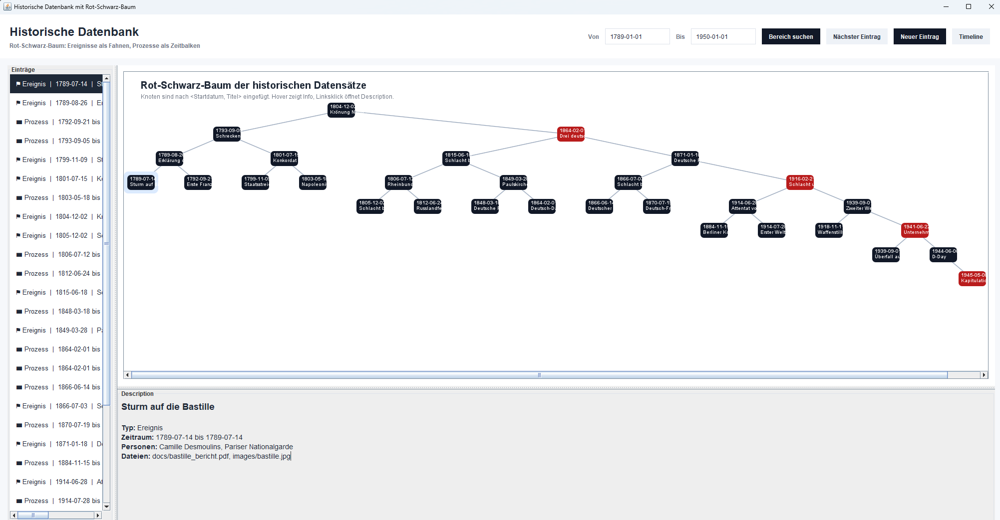

Vorwort
Dieser Kurs behandelt grundlegende Konzepte der Algorithmik und Datenstrukturen, wie sie im Bachelorstudium Informatik an der FSU Jena gelehrt werden. Die Inhalte orientieren sich am Standardwerk Cormen et al. – Introduction to Algorithms (CLRS).
Themenübersicht
- Laufzeitanalyse – Asymptotische Notation, Komplexitätsklassen
- Algorithmen – Sortieralgorithmen, Suchalgorithmen
- Datenstrukturen – Heaps, Suchbäume
Aufbau der Kapitel
Jedes Kapitel enthält sowohl eine fachliche Definition, Erklärungen und Beispiele als auch einen Code-Viewer mit Implementierungen in verschiedenen Programmier- und Pseudosprachen. So kannst du die Konzepte sowohl theoretisch verstehen, als auch so manche Anwendungsfälle nachvollziehen.
Den Code-Viewer findest du am Ende jedes Kapitels. Über das Dropdown im Header des Viewers kannst du zwischen Pseudocode und den jeweiligen Programmiersprachen wechseln.
Code-Beispiel
Laufzeitanalyse
Die Laufzeitanalyse bewertet, wie sich die Ausführungszeit eines Algorithmus in Abhängigkeit von der Eingabegröße n verhält. Dabei interessiert uns vor allem das asymptotische Verhalten – also das Wachstum für große n.
O-Notation (Groß-O)
Die O-Notation beschreibt eine obere Schranke der Laufzeit.
T(n) = O(f(n)) bedeutet: T(n) wächst höchstens so schnell wie
f(n), ab einem bestimmten Schwellwert n₀.
Häufige Komplexitätsklassen
| Notation | Bezeichnung | Typische Beispiele |
|---|---|---|
| O(1) | Konstant | Array-Zugriff, Heap-Maximum lesen |
| O(log n) | Logarithmisch | Binäre Suche, Heap-Einfügen |
| O(n) | Linear | Lineare Suche, BuildHeap |
| O(n log n) | Log-linear | Heapsort, Mergesort |
| O(n²) | Quadratisch | Bubblesort, Insertionsort |
| O(2ⁿ) | Exponentiell | Naive Teilmengenproblem |
Weitere Notationen
- Ω-Notation – untere Schranke: der Algorithmus braucht mindestens so viel Zeit
- Θ-Notation – enge Schranke: obere und untere Schranke stimmen überein
- o-Notation – echte obere Schranke: strikt kleiner, nicht gleich
Konstante Faktoren und kleinere Terme werden bei der asymptotischen Analyse ignoriert.
T(n) = 3n² + 5n + 7 ist daher einfach O(n²).
Pseudocode-Beispiele
Algorithmen
Ein Algorithmus ist eine endliche, präzise Folge von Anweisungen, die ein gegebenes Problem für alle zulässigen Eingaben korrekt löst und terminiert.
Wichtige Eigenschaften
- Korrektheit – Das Ergebnis ist für alle Eingaben richtig.
- Terminierung – Der Algorithmus hält nach endlich vielen Schritten an.
- Effizienz – Zeit- und Speicherkomplexität sind vertretbar.
- Determiniertheit – Gleiche Eingabe liefert immer gleiche Ausgabe.
Klassifikation von Sortieralgorithmen
| Algorithmus | Worst Case | Stabil? | In-Place? |
|---|---|---|---|
| Heapsort | O(n log n) | Nein | Ja |
| Mergesort | O(n log n) | Ja | Nein |
| Quicksort | O(n²) | Nein | Ja |
| Insertionsort | O(n²) | Ja | Ja |
In diesem Kurs
Als konkretes Beispiel eines effizienten Sortierverfahrens wird Heapsort behandelt. Er garantiert O(n log n) in allen Fällen und benötigt keinen zusätzlichen Speicher (in-place).
Graphenalgorithmen
Ein Graph modelliert Objekte und Beziehungen. Die Objekte heißen Knoten oder Vertices, die Beziehungen heißen Kanten. Graphen können gerichtet oder ungerichtet, gewichtet oder ungewichtet, zusammenhängend oder in mehrere Komponenten zerfallen sein. Viele klassische Informatikprobleme sind Graphprobleme: Routing, Abhängigkeiten, soziale Netzwerke, Projektplanung, Compilerbau, Spielzustände, Webgraphen und Datenbankbeziehungen.
Grundbegriffe
| Begriff | Bedeutung | Beispiel |
|---|---|---|
G = (V, E) | Knotenmenge und Kantenmenge | Städte und Straßen |
| gerichtet | Kanten haben Richtung | Abhängigkeit A vor B |
| ungerichtet | Kanten gelten in beide Richtungen | Freundschaft, Straße ohne Richtung |
| gewichtet | Kanten tragen Kosten | Distanz, Zeit, Preis |
| Pfad | Folge benachbarter Knoten | A -> B -> C |
| Zyklus | Pfad führt zum Start zurück | A -> B -> C -> A |
Darstellung: Adjazenzliste vs. Adjazenzmatrix
Für die meisten Algorithmen ist die Repräsentation entscheidend. Eine
Adjazenzliste speichert zu jedem Knoten nur seine Nachbarn und ist für
dünne Graphen speichereffizient. Eine Adjazenzmatrix speichert für jedes
Knotenpaar einen Eintrag und erlaubt Kantenabfragen in O(1), braucht aber
Θ(|V|²) Speicher.
| Darstellung | Speicher | Kante prüfen | Alle Nachbarn von v |
|---|---|---|---|
| Adjazenzliste | Θ(|V| + |E|) | O(deg(v)) | O(deg(v)) |
| Adjazenzmatrix | Θ(|V|²) | O(1) | O(|V|) |
BFS: Breitensuche
Breadth-First Search besucht den Graphen schichtweise vom Startknoten aus. Zuerst kommen alle Knoten in Distanz 1, dann Distanz 2 usw. In ungewichteten Graphen berechnet BFS dadurch kürzeste Wege nach Anzahl der Kanten. Die zentrale Datenstruktur ist eine Queue.
Laufzeit mit Adjazenzlisten: Θ(|V| + |E|). Jeder Knoten wird höchstens
einmal entdeckt, jede Kante wird höchstens konstant oft betrachtet.
DFS: Tiefensuche
Depth-First Search folgt einem Pfad so weit wie möglich, bevor zurückgegangen wird. DFS eignet sich für Zusammenhangskomponenten, Zyklenerkennung, topologische Sortierung und Zeitstempel-Analysen. Implementiert wird DFS rekursiv oder explizit mit einem Stack.
- Entdeckungszeit: Zeitpunkt, an dem ein Knoten erstmals betreten wird.
- Abschlusszeit: Zeitpunkt, an dem alle ausgehenden Kanten bearbeitet sind.
- Topologische Sortierung: Knoten nach fallender Abschlusszeit ausgeben.
Kürzeste Wege
| Algorithmus | Problem | Voraussetzung | Laufzeit |
|---|---|---|---|
| BFS | Single Source Shortest Paths | ungewichtet | Θ(|V| + |E|) |
| Dijkstra | Single Source Shortest Paths | keine negativen Kanten | O((|V| + |E|) log |V|) mit Heap |
| Bellman-Ford | Single Source Shortest Paths | negative Kanten erlaubt | O(|V| · |E|) |
| Floyd-Warshall | All Pairs Shortest Paths | negative Kanten, keine negativen Zyklen | Θ(|V|³) |
Dijkstra arbeitet gierig: Der noch nicht fixierte Knoten mit kleinster
aktueller Distanz wird endgültig gemacht, danach werden seine ausgehenden Kanten
relaxiert. Genau deshalb braucht der Algorithmus eine Prioritätswarteschlange. Mit
Fibonacci-Heaps lässt sich die theoretische Laufzeit auf
O(|E| + |V| log |V|) verbessern, weil Decrease-Key amortisiert
O(1) kostet.
Minimal Spanning Tree: Kruskal und Prim
Ein minimaler Spannbaum verbindet alle Knoten eines zusammenhängenden, ungerichteten, gewichteten Graphen mit minimaler Gesamtkantenlänge und ohne Zyklus. Kruskal und Prim lösen dasselbe Problem, wachsen aber aus unterschiedlichen Blickwinkeln.
| Algorithmus | Idee | Zentrale Datenstruktur | Laufzeit |
|---|---|---|---|
| Kruskal | Kanten aufsteigend sortieren, sichere Kanten wählen | Union-Find | O(|E| log |E|) |
| Prim | Baum von Startknoten aus erweitern | PriorityQueue / Heap | O((|V| + |E|) log |V|) |
Kruskal ist ein sehr gutes Beispiel dafür, warum Disjoint Sets wichtig sind: FindSet prüft, ob zwei Endpunkte bereits in derselben Komponente liegen. Union vereinigt Komponenten, wenn eine Kante sicher aufgenommen wird.
Wann welcher Algorithmus?
- Ungewichtete kürzeste Wege: BFS.
- Positive Kantengewichte: Dijkstra mit MinHeap oder Fibonacci-Heap.
- Negative Kantengewichte: Bellman-Ford; bei allen Paaren Floyd-Warshall.
- Abhängigkeitsreihenfolge: Topologische Sortierung mit DFS oder Kahn-Algorithmus.
- Minimaler Spannbaum: Kruskal bei kantenorientierter Sicht, Prim bei wachsendem Baum.
Pseudocode
Dijkstra
Der Dijkstra-Algorithmus berechnet kürzeste Wege von einem Startknoten
s zu allen anderen Knoten in einem gewichteten Graphen. Er funktioniert nur
korrekt, wenn alle Kantengewichte nichtnegativ sind. Sobald negative
Kanten vorkommen, ist Bellman-Ford die robustere Wahl.
Die Idee ist gierig: In jedem Schritt wird der noch nicht endgültig bearbeitete Knoten mit der kleinsten aktuellen Distanz ausgewählt. Diese Distanz ist dann final, weil keine negative Kante später einen kürzeren Umweg erzeugen kann.
Zentrale Begriffe
| Symbol | Bedeutung |
|---|---|
dist[v] | Aktuell beste bekannte Distanz von s nach v |
parent[v] | Vorgänger von v im kürzesten-Wege-Baum |
Relax(u, v) | Prüft, ob der Weg über u nach v besser ist |
Q | PriorityQueue, sortiert nach kleinster aktueller Distanz |
Ablauf
- Setze alle Distanzen auf
∞, nurdist[s] = 0. - Lege alle Knoten in eine Min-PriorityQueue, Schlüssel ist
dist. - Entnimm wiederholt den Knoten
umit kleinster Distanz. - Relaxiere alle ausgehenden Kanten
(u, v). - Wenn eine Distanz kleiner wird, aktualisiere den Schlüssel in der Queue mit Decrease-Key.
Laufzeit
| Implementierung | Laufzeit | Bemerkung |
|---|---|---|
| Array / lineare Suche | O(|V|² + |E|) | gut für dichte Graphen |
| Binärer MinHeap | O((|V| + |E|) log |V|) | typische Praxisvariante |
| Fibonacci-Heap | O(|E| + |V| log |V|) | theoretisch besser bei vielen Decrease-Key-Aufrufen |
Pseudocode
Implementierungen
Prim
Der Algorithmus von Prim berechnet einen minimalen Spannbaum in einem zusammenhängenden, ungerichteten, gewichteten Graphen. Er beginnt mit einem Startknoten und erweitert den bisherigen Baum immer um die billigste Kante, die aus dem Baum hinaus zu einem noch nicht aufgenommenen Knoten führt.
Prim ist strukturell ähnlich zu Dijkstra: Beide verwenden eine Min-PriorityQueue und verbessern Schlüssel. Der Unterschied ist die Bedeutung des Schlüssels: Bei Dijkstra ist es die Distanz vom Start, bei Prim ist es das billigste aktuelle Anschlussgewicht an den wachsenden Spannbaum.
Ablauf
- Wähle einen beliebigen Startknoten
r. - Setze
key[r] = 0, alle anderen Schlüssel auf∞. - Entnimm wiederholt den Knoten mit kleinstem Schlüssel aus der PriorityQueue.
- Für jede Kante zu einem noch nicht aufgenommenen Nachbarn: verbessere dessen Schlüssel, wenn die Kante billiger ist.
- Die gespeicherten
parent-Zeiger bilden am Ende den MST.
Vergleich zu Kruskal
| Eigenschaft | Prim | Kruskal |
|---|---|---|
| Wachstum | ein zusammenhängender Baum wächst | viele Komponenten werden vereinigt |
| Datenstruktur | PriorityQueue / Heap | Union-Find |
| Kantenreihenfolge | lokal billigste Anschlusskante | global sortierte Kanten |
| Typisch gut | dichte Graphen, Adjazenzlisten mit Heap | kantenorientierte oder dünne Graphen |
Pseudocode
Implementierungen
Kruskal
Der Algorithmus von Kruskal berechnet ebenfalls einen minimalen Spannbaum. Er betrachtet die Kanten global nach aufsteigendem Gewicht. Eine Kante wird genau dann aufgenommen, wenn sie zwei bisher verschiedene Komponenten verbindet. Kanten, deren Endpunkte bereits in derselben Komponente liegen, würden einen Zyklus erzeugen und werden verworfen.
Kruskal ist das Standardbeispiel für Union-Find: FindSet erkennt, ob zwei Endpunkte schon verbunden sind; Union vereinigt die Komponenten nach Aufnahme einer sicheren Kante.
Ablauf
- Erzeuge für jeden Knoten eine eigene Menge mit
MakeSet. - Sortiere alle Kanten nach aufsteigendem Gewicht.
- Gehe die Kanten in dieser Reihenfolge durch.
- Wenn die Endpunkte in verschiedenen Mengen liegen, füge die Kante zum MST hinzu.
- Vereinige anschließend die beiden Mengen mit
Union.
Laufzeit
Die Sortierung der Kanten dominiert: O(|E| log |E|). Die Union-Find-
Operationen sind mit Path Compression und Union by Rank amortisiert fast konstant.
Da in einfachen Graphen |E| ≤ |V|² gilt, schreibt man oft auch
O(|E| log |V|).
Pseudocode
Implementierungen
Topologisches Sortieren
Topologisches Sortieren ordnet die Knoten eines gerichteten azyklischen
Graphen so an, dass jede Kante u -> v von links nach rechts zeigt:
u kommt also vor v. Das funktioniert genau dann, wenn der Graph
ein DAG ist, also keine gerichteten Zyklen enthält.
Typische Anwendungen sind Build-Systeme, Modulabhängigkeiten, Kursvoraussetzungen, Paketmanager, Task-Scheduling und Auswertungsreihenfolgen in Compilern.
DFS-Variante
Bei der DFS-Variante wird jeder Knoten erst dann vorne in die Ergebnisliste eingefügt, wenn alle von ihm erreichbaren Nachfolger fertig bearbeitet wurden. Äquivalent sortiert man die Knoten nach fallender Abschlusszeit.
Kahn-Algorithmus
Kahn arbeitet mit Eingangsgraden. Alle Knoten mit Eingangsgrad 0 können
sofort ausgegeben werden, weil keine unerfüllte Voraussetzung mehr vor ihnen liegt.
Entfernt man einen solchen Knoten, sinkt der Eingangsgrad seiner Nachfolger. Bleiben am
Ende Knoten übrig, liegt ein Zyklus vor.
Laufzeit
| Variante | Datenstruktur | Laufzeit |
|---|---|---|
| DFS | Rekursion oder Stack | Θ(|V| + |E|) |
| Kahn | Queue für Eingangsgrad-0-Knoten | Θ(|V| + |E|) |
Pseudocode
Implementierungen
Heapsort
Heapsort ist ein vergleichsbasierter Sortieralgorithmus, der auf der Datenstruktur MaxHeap aufbaut. Er kombiniert die Vorteile von Insertionsort (in-place) mit denen von Mergesort (O(n log n) garantiert).
Ablauf in zwei Phasen
- Phase 1 – BuildMaxHeap: Das gesamte Array wird in einen gültigen MaxHeap umgewandelt. Das größte Element steht danach an Stelle A[0]. Laufzeit: O(n).
- Phase 2 – Sortierschleife: Das Maximum A[0] wird mit dem letzten unsortierten Element getauscht und ans Ende „gelegt". Die Heapgröße wird um 1 verringert und MaxHeapify stellt die Heap-Eigenschaft wieder her. Dieser Schritt wiederholt sich n−1 mal. Laufzeit: O(n log n).
Komplexität
| Fall | Laufzeit | Speicher |
|---|---|---|
| Best Case | O(n log n) | O(1) |
| Average Case | O(n log n) | O(1) |
| Worst Case | O(n log n) | O(1) |
Heapsort ist in-place (sortiert ohne zusätzlichen Speicher) und garantiert O(n log n) — unabhängig von der Eingabe. Es ist jedoch nicht stabil, d.h. gleiche Elemente können ihre relative Reihenfolge ändern.
Voraussetzung: MaxHeap
Heapsort setzt die Operationen BuildMaxHeap und MaxHeapify voraus, die im Kapitel MaxHeap (Datenstrukturen) detailliert erklärt werden.
Implementierung
Datenstrukturen
Eine Datenstruktur legt fest, wie Daten im Speicher angeordnet, gespeichert und verwaltet werden. Die Wahl der richtigen Datenstruktur beeinflusst die Laufzeit von Algorithmen erheblich.
Binäre Heaps
Ein binärer Heap ist ein vollständiger binärer Baum, der als flaches Array gespeichert wird. Für einen Knoten an Index i (0-basiert) gilt:
- Linkes Kind: Index
2·i + 1 - Rechtes Kind: Index
2·i + 2 - Elternknoten: Index
⌊(i−1) / 2⌋

Heap-Struktur: Baumdarstellung (oben) und Array-Repräsentation (unten)
Heap-Varianten in diesem Kurs
| Typ | Heap-Eigenschaft | Wurzel enthält |
|---|---|---|
| MaxHeap | A[parent] ≥ A[child] | Maximum |
| MinHeap | A[parent] ≤ A[child] | Minimum |
| Binomialheap | Wurzelliste aus Binomialbäumen | Merge in O(log n) |
| Fibonacci-Heap | Lazy Wurzelliste mit Markierungen | Decrease-Key amortisiert O(1) |
Mengenstrukturen
Union-Find bzw. Disjoint Sets verwaltet dynamische Zerlegungen in disjunkte Mengen. Die Struktur ist kein Suchbaum und kein Heap, sondern spezialisiert auf Zusammengehörigkeit: FindSet liefert den Repräsentanten einer Menge, Union vereinigt zwei Mengen. Mit Path Compression und Union by Rank werden lange Elternketten vermieden.
Suchbäume
Suchbäume speichern Schlüssel so, dass links kleinere und rechts größere Schlüssel liegen. Damit werden Suchen, Einfügen, Löschen und Bereichsanfragen strukturell unterstützt. Ab einem gewissen Punkt lassen sich die einzelnen Methoden selbst nicht mehr asymptotisch effizienter formulieren: Eine Suche muss dem Vergleichspfad folgen, ein Einfügen muss die Einfügeposition finden, ein Löschen muss die Ordnung erhalten. Die Verbesserung liegt dann nicht mehr in einer „clevereren" Methode, sondern in der Optimierung der Datenstruktur. Balancierte Suchbäume halten ihre Höhe klein und verhindern, dass ein Baum zur linearen Liste degeneriert.
MaxHeap
Ein MaxHeap ist ein vollständiger binärer Baum (im Array gespeichert), bei dem jeder Elternknoten größer oder gleich seinen Kindern ist. Das Maximum steht immer an Position A[0] und kann in O(1) abgerufen werden.
Operationen und Laufzeiten
| Operation | Laufzeit | Beschreibung |
|---|---|---|
| BuildMaxHeap | O(n) | Array in gültigen MaxHeap umwandeln |
| MaxHeapify | O(log n) | Heap-Eigenschaft ab Index i wiederherstellen |
| MaxHeapInsert | O(log n) | Neuen Schlüssel einfügen |
| ExtractMax | O(log n) | Maximum entfernen und zurückgeben |
| Maximum lesen | O(1) | A[0] zurückgeben |
MaxHeapify – Kernoperation
MaxHeapify(A, i) stellt sicher, dass der Teilbaum ab Index i die MaxHeap-Eigenschaft erfüllt. Dazu wird der Knoten bei Bedarf mit dem größeren seiner Kinder getauscht und rekursiv weiter nach unten korrigiert.
BuildMaxHeap
Durch Aufruf von MaxHeapify auf allen inneren Knoten (von unten nach oben) wird ein beliebiges Array in einen MaxHeap umgewandelt. Obwohl MaxHeapify einzeln O(log n) kostet, ist die Gesamtlaufzeit von BuildMaxHeap nur O(n).
Der MaxHeap wird von Heapsort als Grundstruktur verwendet. Das Verständnis von MaxHeapify und BuildMaxHeap ist daher Voraussetzung für Heapsort.
Implementierung
MinHeap
Ein MinHeap ist das Gegenstück zum MaxHeap: Jeder Elternknoten ist kleiner oder gleich seinen Kindern. Das Minimum steht immer an Position A[0] und kann in O(1) abgerufen werden.
Unterschied zum MaxHeap
Struktur und Operationen sind identisch zum MaxHeap – lediglich die Vergleichsrichtung ist umgekehrt:
- MaxHeap:
A[parent] ≥ A[child]→ Wurzel = Maximum - MinHeap:
A[parent] ≤ A[child]→ Wurzel = Minimum
Operationen und Laufzeiten
| Operation | Laufzeit | Beschreibung |
|---|---|---|
| BuildMinHeap | O(n) | Array in gültigen MinHeap umwandeln |
| MinHeapify | O(log n) | Heap-Eigenschaft ab Index i wiederherstellen |
| MinHeapInsert | O(log n) | Neuen Schlüssel einfügen |
| ExtractMin | O(log n) | Minimum entfernen und zurückgeben |
| Minimum lesen | O(1) | A[0] zurückgeben |
Typische Anwendungsfälle
- Prioritätswarteschlangen – z.B. im Dijkstra-Algorithmus für kürzeste Wege
- Scheduling – immer den Prozess mit kleinster Priorität zuerst
- K-smallest – Effizientes Abrufen der k kleinsten Elemente aus einer Menge
MinHeapInsert beginnt mit dem Wert +∞ an der neuen Position und ruft dann MinHeapDecreaseKey auf, um den tatsächlichen Schlüssel einzusetzen und nach oben zu "sickern" (bubble-up).
Implementierung
PriorityQueue
Eine Prioritätswarteschlange (Priority Queue) ist ein abstrakter Datentyp, bei dem jedes Element eine numerische Priorität trägt. Im Gegensatz zur gewöhnlichen FIFO-Warteschlange wird stets das Element mit der höchsten (Max-PQ) oder niedrigsten (Min-PQ) Priorität als nächstes entnommen – unabhängig von der Einfügereihenfolge.
Heap als natürliche Implementierung
Der binäre Heap ist die kanonische Implementierung einer Prioritätswarteschlange: Insert läuft in O(log n), ExtractMax/Min entnimmt die Wurzel in O(log n), und das Maximum bzw. Minimum ist in O(1) lesbar. Eine sortierte Liste oder ein unsortiertes Array wären für mindestens eine der beiden Operationen langsamer.
Komplexität im Vergleich
| Implementierung | Insert | ExtractMax/Min | Peek |
|---|---|---|---|
| Binärer Heap | O(log n) | O(log n) | O(1) |
| Sortiertes Array | O(n) | O(1) | O(1) |
| Unsortiertes Array | O(1) | O(n) | O(n) |
Variante 1 – Manuell: TaskMaxHeap
TaskMaxHeap ist eine händisch implementierte MaxHeap-basierte
Prioritätswarteschlange für TaskManual-Objekte. Das Element mit der
höchsten Priorität steht stets an der Wurzel (Index 0) und
wird von extractMax() als erstes entnommen. Nach jedem Insert
stellt ein Bubble-up, nach jeder Entnahme ein Heapify-down die
Heap-Eigenschaft wieder her. Diese Variante macht den Mechanismus explizit sichtbar
und zeigt, was hinter jeder fertigen Bibliotheksklasse steckt.
Variante 2 – Java-Standard: java.util.PriorityQueue
Javas eingebaute PriorityQueue<E> ist intern als
binärer MinHeap implementiert – standardmäßig wird also das
Element mit der niedrigsten Priorität zuerst entnommen (natürliche Ordnung
via Comparable). Um eine Max-PQ zu erhalten, muss ein umgekehrter
Comparator übergeben werden:
new PriorityQueue<>(Comparator.comparingInt((Task t) -> t.priority).reversed())
TaskManager zeigt diese Variante: Nach außen verhält sie sich identisch
zur manuellen Implementierung, nutzt intern jedoch die Laufzeitbibliothek.
In der Praxis ist dies der bevorzugte Weg.
Faustregel: In realen Projekten wird fast immer
java.util.PriorityQueue eingesetzt. Die manuelle Implementierung
dient dem Verständnis der Heap-Mechanik und verdeutlicht, was intern abläuft.
Exkurs: Stack und Heap im virtuellen Adressraum
Das Betriebssystem teilt den virtuellen Adressraum eines Prozesses in mehrere Segmente auf. Zwei davon – Stack und Heap – wachsen dynamisch und liegen an gegenüberliegenden Enden des Speichers. Wichtig: Diese Speicherbereiche sind unabhängig von den gleichnamigen Datenstrukturen.

Virtueller Adressraum – Segmente von low address (0x0000) bis high address
Segmente im Überblick
| Segment | Inhalt | Charakteristik |
|---|---|---|
| text | Maschinencode des Programms | Read-only, von Disk geladen |
| data | Initialisierte globale / statische Variablen | Von Disk geladen |
| bss | Nicht-initialisierte globale / statische Variablen | Beim Programmstart auf 0 gesetzt |
| heap | Dynamisch allokierte Objekte (new) | Wächst nach oben ↑, GC-verwaltet (Java) / manuell (C/C++) |
| stack | Funktionsaufrufe, lokale Variablen, Rücksprungadressen | Wächst nach unten ↓, LIFO, feste Größe |
Wie das Diagramm zeigt, liegen Stack und Heap am gegenüberliegenden Enden des dynamisch allokierten Bereichs und wachsen aufeinander zu: der Heap wächst von der niedrigen Adresse nach oben (↑), der Stack von der hohen Adresse nach unten (↓). Dazwischen liegt der aktuell ungenutzte Speicher, der je nach Bedarf beansprucht wird.
Der Call Stack verwaltet Funktionsaufrufe nach dem LIFO-Prinzip. Bei jedem Aufruf wird ein neuer Stack Frame obenauf gelegt (enthält lokale Variablen, Parameter, Rücksprungadresse); beim Rücksprung wird er entfernt. Diese Struktur ist extrem schnell – Allokation ist ein einziger Zeigerarithmetik-Schritt – aber starr: Überschreitet die Rekursionstiefe das verfügbare Segment, folgt ein StackOverflowError (Java) bzw. eine Segmentation Fault (C/C++).
Der Heap-Speicher allokiert Objekte dynamisch zur Laufzeit.
In Java landen alle per new erzeugten Objekte hier; der Garbage Collector
gibt nicht mehr erreichbare Objekte frei. In C/C++ liegt die Verwaltung beim
Programmierer (malloc/free). Heap-Allokation ist langsamer,
bietet aber nahezu unbegrenzte Kapazität und lebt über Funktionsgrenzen hinaus.
| Eigenschaft | Call Stack | Heap-Speicher |
|---|---|---|
| Wachstumsrichtung | ↓ hohe → niedrige Adresse | ↑ niedrige → hohe Adresse |
| Größe | Fest (typ. 512 KB – 8 MB) | Dynamisch (GB-Bereich) |
| Allokationsgeschwindigkeit | O(1), sehr schnell | Langsamer (GC / malloc-Overhead) |
| Zugriffsmuster | LIFO (Stack Frames) | Beliebig |
| Überlaufrisiko | StackOverflowError / Segfault | OutOfMemoryError |
| Lebensdauer | An Funktionsaufruf gebunden | Bis GC / free() freigibt |
Terminologischer Hinweis: Der „Heap-Speicher" (Segment im virtuellen Adressraum) und der „Heap" als Datenstruktur (MaxHeap, MinHeap, binärer Heap) sind konzeptuell vollständig unabhängig. Die Namensgleichheit ist historisch bedingt und eine häufige Quelle von Verwirrung.
Implementierungen – manuell & Standard-Bibliothek
Binomialheap
Ein Binomialheap ist eine Prioritätswarteschlange, die nicht aus einem
einzelnen binären Heap besteht, sondern aus einer Menge von Binomialbäumen.
Jeder Binomialbaum B_k hat genau 2^k Knoten, Höhe
k und eine Wurzel mit Grad k. Die Kinder eines
B_k sind die Wurzeln von B_0, B_1, ..., B_{k-1}.
Die zentrale Idee ist dieselbe wie bei Binärzahlen: Für jeden Grad darf es höchstens einen Baum geben. Zwei Bäume gleichen Grades werden verlinkt und erzeugen einen Baum des nächsthöheren Grades. Union funktioniert deshalb wie binäres Addieren mit Übertrag.
Struktur
| Eigenschaft | Bedeutung |
|---|---|
| Wurzelliste | Liste der Binomialbäume, typischerweise nach Grad sortiert |
| Grad | Anzahl der Kinder einer Wurzel; entspricht dem Index k von B_k |
| Heap-Eigenschaft | Bei Min-Binomialheap ist jede Wurzel kleiner oder gleich ihren Kindern |
| Eindeutigkeit | Für jeden Grad existiert höchstens ein Baum in der Wurzelliste |
Warum mehrere Bäume?
Ein binärer Heap ist sehr gut für Insert und Extract-Min, aber ein echtes Merge zweier Heaps ist teuer, wenn man nur Arrays zusammenklebt und neu heapifiziert. Binomialheaps machen Merge zur Kernoperation: Zwei Heaps werden über ihre Wurzellisten vereinigt. Gleiche Grade werden durch Link bereinigt.
Dadurch eignet sich der Binomialheap besonders für Algorithmen und Systeme, in denen Prioritätswarteschlangen häufig zusammengeführt werden, etwa bei meldbaren Queues, komponentenorientierten Graphverfahren oder Simulationen mit mehreren Ereignislisten.
Operationen
| Operation | Laufzeit | Mechanik |
|---|---|---|
| Find-Min | O(log n) | Wurzelliste scannen |
| Insert | O(log n) | Ein-Knoten-Heap erzeugen und Union ausführen |
| Union / Merge | O(log n) | Wurzellisten wie Binärzahlen addieren |
| Extract-Min | O(log n) | Min-Wurzel entfernen, Kinder umdrehen, Union |
| Decrease-Key | O(log n) | Schlüssel verkleinern und nach oben tauschen |
| Delete | O(log n) | Decrease-Key auf -∞, dann Extract-Min |
Link: Zwei gleichgradige Bäume verbinden
Wenn zwei Binomialbäume denselben Grad haben, wird die größere Wurzel Kind der kleineren Wurzel. Dadurch steigt der Grad der kleineren Wurzel um eins. Die Heap-Eigenschaft bleibt erhalten, weil die neue Elternwurzel kleiner oder gleich der anderen Wurzel ist.
Extract-Min im Detail
Extract-Min sucht zuerst die Wurzel mit kleinstem Schlüssel. Diese Wurzel wird aus der Wurzelliste entfernt. Ihre Kinder bilden selbst wieder eine gültige Menge von Binomialbäumen, allerdings in umgekehrter Gradreihenfolge. Nach dem Umdrehen werden die Kinder als zweiter Heap betrachtet und mit dem Restheap vereinigt.
Im DatastructureLab gibt es dafür eine interaktive Binomialheap-Visualisierung mit Wurzellisten, Graden und Merge-Schritten.
Pseudocode
Implementierungen
Fibonacci-Heap
Ein Fibonacci-Heap ist eine noch stärker lazy arbeitende meldbare Prioritätswarteschlange. Wie der Binomialheap besteht er aus einer Wurzelliste mehrerer Bäume. Im Unterschied dazu wird beim Einfügen und Mergen zunächst kaum aufgeräumt: Neue Knoten werden einfach in die Wurzelliste gehängt. Die teure Konsolidierung wird auf Extract-Min verschoben.
Fibonacci-Heaps sind vor allem wegen ihrer amortisierten Laufzeiten bekannt:
Insert, Find-Min, Union und Decrease-Key sind
amortisiert O(1). Extract-Min bleibt amortisiert
O(log n).
Warum heißt er Fibonacci-Heap?
Die Analyse nutzt eine Schranke über Fibonacci-Zahlen: Durch die Markierungsregel und
das kaskadierende Schneiden kann ein Knoten mit Grad k nicht beliebig wenige
Nachkommen haben. Die Mindestgröße eines Teilbaums wächst mindestens fibonacciartig mit
seinem Grad. Daraus folgt, dass der maximale Grad nur O(log n) ist.
Lazy Strategie
| Operation | Was passiert sofort? | Amortisierte Laufzeit |
|---|---|---|
| Insert | Knoten in Wurzelliste hängen, Min-Zeiger aktualisieren | O(1) |
| Find-Min | Min-Zeiger lesen | O(1) |
| Union | Wurzellisten verketten, Min-Zeiger vergleichen | O(1) |
| Decrease-Key | ggf. schneiden und kaskadierend schneiden | O(1) |
| Extract-Min | Kinder der Min-Wurzel aufnehmen, danach Consolidate | O(log n) |
| Delete | Decrease-Key auf -∞, dann Extract-Min | O(log n) |
Markierungen und kaskadierendes Schneiden
Jeder Nicht-Wurzel-Knoten kann markiert sein. Eine Markierung bedeutet: Dieser Knoten hat bereits ein Kind verloren, seit er selbst Kind seines Elternknotens wurde. Verliert ein markierter Knoten ein weiteres Kind, wird er aus seinem Elternbaum herausgeschnitten und in die Wurzelliste gehängt. Dieser Schnitt kann sich nach oben fortsetzen; daher spricht man von cascading cut.
Diese Regel verhindert, dass Bäume strukturell zu dünn werden. Ohne Markierungen könnte ein hoher Grad mit sehr wenigen Nachkommen entstehen, und die logarithmische Gradschranke wäre nicht mehr haltbar.
Consolidate nach Extract-Min
Beim Entfernen des Minimums werden dessen Kinder zu Wurzeln. Danach kann die Wurzelliste viele Bäume gleichen Grades enthalten. Consolidate räumt auf: Solange zwei Wurzeln denselben Grad haben, werden sie verlinkt. Am Ende gibt es pro Grad höchstens eine Wurzel, ähnlich wie beim Binomialheap.
Bezug zu Graphenalgorithmen
Fibonacci-Heaps sind theoretisch besonders attraktiv für Dijkstra und Prim, weil diese
Algorithmen viele Decrease-Key-Operationen ausführen. Mit einem binären Heap
kostet Decrease-Key O(log |V|); mit Fibonacci-Heap amortisiert
O(1). Dadurch ergibt sich für Dijkstra
O(|E| + |V| log |V|). In praktischen Implementierungen sind binäre Heaps
dennoch oft schneller, weil Fibonacci-Heaps hohe konstante Faktoren und komplexe
Pointer-Strukturen haben.
Das DatastructureLab enthält eine Fibonacci-Heap-Visualisierung mit Wurzelliste, Grad-Badges, Markierungen, Cut und Consolidate-Schritten.
Pseudocode
Implementierungen
Union-Find / Disjoint Sets
Union-Find, auch Disjoint Set Union oder DSU, verwaltet eine Zerlegung von Elementen in paarweise disjunkte Mengen. Jedes Element gehört zu genau einer Menge. Die Struktur beantwortet sehr schnell: Sind zwei Elemente in derselben Menge? Und wenn nicht: Wie vereinige ich ihre Mengen?
Die drei Kernoperationen sind MakeSet(x), FindSet(x) und Union(x, y). In der Forest-Variante zeigt jeder Knoten auf einen Elternknoten. Die Wurzel eines Baums ist der Repräsentant der Menge.
Operationen
| Operation | Bedeutung | Optimierte Laufzeit |
|---|---|---|
| MakeSet(x) | Neue Menge mit nur x erzeugen | O(1) |
| FindSet(x) | Repräsentanten der Menge von x finden | amortisiert fast O(1) |
| Union(x, y) | Mengen von x und y vereinigen | amortisiert fast O(1) |
| Link(rx, ry) | Zwei Repräsentanten anhand Rank verbinden | O(1) |
Forest-Repräsentation
Jede Menge ist ein Baum. Jeder Knoten besitzt einen parent-Zeiger. Eine
Wurzel zeigt auf sich selbst. Zwei Elemente sind genau dann in derselben Menge, wenn
FindSet für beide dieselbe Wurzel liefert.
Ohne Optimierung können die Bäume zu langen Listen degenerieren. Dann wird FindSet linear. Deshalb kombiniert man zwei Strategien:
- Path Compression: Beim Suchen werden alle besuchten Knoten direkt an die Wurzel gehängt.
- Union by Rank: Der Baum mit kleinerem Rank wird unter die Wurzel mit größerem Rank gehängt.
Path Compression
FindSet(x) läuft rekursiv oder iterativ bis zur Wurzel. Auf dem Rückweg wird jeder Knoten des Suchpfads direkt mit der Wurzel verbunden. Die Antwort bleibt gleich, aber zukünftige Suchen werden viel kürzer. Nach einigen Operationen sehen viele Bäume fast sternförmig aus.
Union by Rank
Der rank ist eine obere Schranke für die Baumhöhe, nicht zwingend die
aktuelle exakte Höhe. Beim Vereinigen zweier Wurzeln wird die Wurzel mit kleinerem Rank
Kind der Wurzel mit größerem Rank. Nur wenn beide Ranks gleich sind, wird einer unter
den anderen gehängt und der neue Rank um eins erhöht.
Laufzeitanalyse
Mit beiden Optimierungen ist eine Folge von m Operationen auf
n Elementen in O(m · α(n)) ausführbar. α(n) ist
die inverse Ackermann-Funktion und wächst so langsam, dass sie für alle praktisch
vorkommenden Eingabegrößen höchstens eine sehr kleine Konstante ist. In der Praxis kann
man Union-Find daher fast als konstant schnell betrachten.
Anwendungen
- Kruskal-Algorithmus: Zyklusprüfung beim Aufbau eines minimalen Spannbaums.
- Zusammenhangskomponenten: Dynamisch Komponenten in ungerichteten Graphen verwalten.
- Perkolation und Simulation: Prüfen, ob Zellen/Regionen verbunden sind.
- Bildverarbeitung: Connected-Component-Labeling in Binärbildern.
- Unifikation und Gruppierung: Elemente nach Gleichheitsrelationen zusammenfassen.
Im DatastructureLab sind MakeSet, FindSet, DSFUnion und DSFLink als visualisierte Operationen vorhanden.
Pseudocode
Implementierungen
Rot-Schwarz-Baum
Ein Rot-Schwarz-Baum ist ein binärer Suchbaum, der zusätzlich jeden Knoten rot oder schwarz färbt. Die Farben erzwingen eine kontrollierte Baumhöhe: Kein Pfad wird mehr als doppelt so lang wie ein anderer. Dadurch bleiben Search, Insert und Delete auch im schlechtesten Fall bei O(log n).
Bei Suchbäumen ist der zentrale Punkt: Die elementaren Methoden können den Vergleichspfad nicht überspringen. Wenn ein normaler Suchbaum entartet, werden die Methoden langsam, obwohl ihr Code korrekt ist. Rot-Schwarz-Bäume optimieren deshalb die Struktur selbst: Nach Einfügen und Löschen wird der Baum durch Umfärben und Rotationen wieder balanciert.
Eigenschaften
- Jeder Knoten ist rot oder schwarz.
- Die Wurzel ist schwarz.
- Alle NIL-Blätter gelten als schwarz.
- Ein roter Knoten hat keine roten Kinder.
- Auf jedem Pfad von einem Knoten zu einem NIL-Blatt liegen gleich viele schwarze Knoten.
Operationen und Laufzeiten
| Operation | Laufzeit | Beschreibung |
|---|---|---|
| Search | O(log n) | Schlüssel entlang der Suchbaumordnung finden |
| Minimum / Maximum | O(log n) | Ganz links bzw. ganz rechts absteigen |
| Successor / Predecessor | O(log n) | Nächsten bzw. vorherigen Schlüssel bestimmen |
| Insert | O(log n) | Wie BST einfügen, danach Farben reparieren |
| Delete | O(log n) | Wie BST löschen, danach Schwarz-Höhe reparieren |
Die drei Einfüge-Fälle
Ein neuer Knoten wird zunächst wie in einem normalen binären Suchbaum eingefügt und rot gefärbt. Nur wenn sein Elternknoten ebenfalls rot ist, entsteht ein Konflikt. Dann unterscheidet man die Farbe und Lage des Onkels:
- Roter Onkel: Elternknoten und Onkel werden schwarz, der Großelternknoten rot. Danach wird beim Großelternknoten weitergeprüft.
- Schwarzer Onkel, gerade Linie: Knoten, Elternknoten und Großelternknoten liegen links-links oder rechts-rechts. Eine einfache Rotation am Großelternknoten genügt.
- Schwarzer Onkel, Knick: Knoten liegt links-rechts oder rechts-links. Erst wird am Elternknoten rotiert, danach entsteht der gerade Fall und es folgt die zweite Rotation.
Implementierung
Anwendungen
- Scheduling-Systeme: Aufgaben werden nach Zeitstempel oder Priorität sortiert gehalten.
- Versionsverwaltung: GitHub kann vereinfacht als System betrachtet werden, das Commits, Branches, Pull Requests und Zeitpunkte effizient auffindbar verwaltet.
- Leaderboards: Punktestände bleiben sortiert, sodass Rangnachbarn und Top-Bereiche schnell abfragbar sind.
- Intervallsuche: Öffnungszeiten, Buchungen oder Zeitfenster lassen sich nach Start- und Endpunkten durchsuchen.
- Netzwerk-Routing-Tabellen: Präfixe oder Bereiche werden geordnet gespeichert, um passende Routen schnell zu finden.
- Textindex: Wörter oder Tokens werden mit Positionen verknüpft und für Suche, Autocomplete oder Konkordanzen genutzt.
Beispiel: Historische Datenbank
Eine historische Datenbank kann Datumswerte als Schlüssel speichern, etwa
<Jahr, Monat, Tag>. Zu jedem Datum hängen Listen von Ereignissen,
Personen, Entwicklungen über einen Zeitraum und Dateien. Ein Rot-Schwarz-Baum eignet
sich hier, weil Einträge nicht nur exakt gesucht werden: Man möchte alle Ereignisse
zwischen 1789-07-14 und 1799-11-09, den nächsten bekannten Eintrag nach einem Datum
oder alle Quellen in einem Jahrhundert effizient finden.
Zeiträume können über Startdatum und Enddatum modelliert werden. Der Baum ordnet nach
Startdatum; in den Knoten liegen zusätzlich Metadaten wie Titel, beteiligte Personen,
Tags, Quellenpfade und optionale Enddaten. Für Intervallfragen kann man die Knoten um
ein Feld maxEndDate erweitern. Dann überspringt die Suche ganze Teilbäume,
deren spätestes Enddatum vor dem gesuchten Zeitraum liegt.
UI-Demo und Rot-Schwarz-Baum-Nutzung
Die historische Datenbank-Demo nutzt in Java TreeMap. Diese Klasse ist
intern als Rot-Schwarz-Baum umgesetzt. Die Einträge werden dabei nach
dem Startdatum sortiert gespeichert; mehrere Einträge mit gleichem Datum liegen als
Liste im Knotenwert. Dadurch können Bereichsanfragen wie „alle Einträge zwischen
1789 und 1817", der nächste Eintrag nach einem Datum oder die Baumansicht effizient
aus der sortierten Struktur abgeleitet werden.
Der Vorteil gegenüber einer einfachen Liste ist die garantierte logarithmische Höhe: Suchen, Einfügen und Nachbarabfragen bleiben auch bei vielen historischen Einträgen O(log n). Für eine Timeline oder historische Datenbank ist das besonders nützlich, weil neue Quellen, Ereignisse und Prozesse ständig eingefügt werden können, ohne dass die Struktur zu einer langsamen linearen Suche degeneriert.

Timeline-Ansicht: Ereignisse als rote Fahnen, Prozesse als grüne Balken

Baumansicht: Datensätze als Rot-Schwarz-Baum nach Startdatum und Titel
Basic Demo: Historische Datenbank
Asymptotische Notation
Asymptotische Notation beschreibt das Wachstum einer Funktion für große Eingaben. Dabei werden konstante Faktoren und kleine Eingabegrößen ausgeblendet, weil sie für die langfristige Skalierung weniger wichtig sind als der dominante Term.
f(n) ∈ O(g(n)) bedeutet obere Schranke: Es gibt Konstanten
c > 0 und n₀, sodass für alle n ≥ n₀ gilt:
0 ≤ f(n) ≤ c · g(n). Ω ist die passende untere Schranke,
Θ bedeutet beides zugleich.
| Notation | Bedeutung | Beispiel |
|---|---|---|
O(g) | höchstens so schnell wachsend | 3n + 7 ∈ O(n) |
Ω(g) | mindestens so schnell wachsend | n² + n ∈ Ω(n²) |
Θ(g) | gleiches Wachstum bis auf Konstanten | 5n log n ∈ Θ(n log n) |
Beispiel
Laufzeitklassen
Laufzeitklassen ordnen Algorithmen danach, wie stark ihre Kosten mit der Eingabegröße wachsen. Kleine Unterschiede wirken bei großen Eingaben massiv: Zwischen linear, log-linear, quadratisch und exponentiell liegen oft mehrere Größenordnungen.
In der Analyse zählt meistens der dominante Term. Aus 7n² + 30n + 12 wird
deshalb Θ(n²). Die niedrigeren Terme verschwinden nicht rechnerisch, sie
bestimmen nur nicht das langfristige Wachstum.
| Klasse | Typisches Beispiel | Einordnung |
|---|---|---|
O(1) | Arrayzugriff per Index | konstant |
O(log n) | binäre Suche | sehr gut skalierend |
O(n) | lineare Suche | ein Durchlauf |
O(n log n) | Mergesort, Heapsort | effizientes vergleichsbasiertes Sortieren |
O(n²) | verschachtelte Schleifen | für große Eingaben teuer |
Beispiel
Methode 1: Funktionen ineinander überführen
Bei der direkten Abschätzung wird die Laufzeit aus der Programmstruktur abgelesen: Schleifen zählen, Schachtelungstiefe bestimmen, unabhängige Blöcke addieren und am Ende den dominanten Term isolieren. Diese Methode eignet sich besonders für iterative Programme.
Hintereinander ausgeführte Blöcke werden addiert, verschachtelte Schleifen werden
multipliziert. Aus n + n² + 10 folgt daher Θ(n²).
| Codeform | Abschätzung |
|---|---|
eine Schleife bis n | Θ(n) |
zwei unabhängige Schleifen bis n | Θ(n + n) = Θ(n) |
zwei geschachtelte Schleifen bis n | Θ(n · n) = Θ(n²) |
Beispiel
Methode 2: Rekursionsbaum
Ein Rekursionsbaum zerlegt eine Rekurrenz in Ebenen. Jeder Knoten steht für ein Teilproblem, jede Ebene fasst die Arbeit aller Teilprobleme gleicher Rekursionstiefe zusammen. Die Gesamtkosten entstehen aus der Summe über alle Ebenen.
Für T(n) = 2T(n/2) + n kostet jede Ebene zusammen n. Es gibt
log₂ n Teilungsebenen, also insgesamt Θ(n log n).
| Ebene | Teilprobleme | Kosten gesamt |
|---|---|---|
| 0 | 1 × n | n |
| 1 | 2 × n/2 | n |
| 2 | 4 × n/4 | n |
log₂ n | Basisfälle | Θ(n) |
Beispiel
Methode 3: Master-Theorem
Das Master-Theorem löst viele Rekurrenzen der Form
T(n) = aT(n/b) + f(n). Dabei beschreibt a die Anzahl der
Teilprobleme, n/b deren Größe und f(n) die Arbeit außerhalb der
rekursiven Aufrufe.
Verglichen wird f(n) mit n^(log_b a). Ist f(n)
kleiner, dominieren die Blätter. Ist es gleich groß, kommt ein Logarithmus dazu. Ist es
größer und erfüllt die Regularitätsbedingung, dominiert f(n).
| Fall | Bedingung | Ergebnis |
|---|---|---|
| 1 | f(n) = O(n^(log_b a - ε)) | Θ(n^log_b a) |
| 2 | f(n) = Θ(n^log_b a) | Θ(n^log_b a · log n) |
| 3 | f(n) = Ω(n^(log_b a + ε)) | Θ(f(n)) |
Beispiel
Bubblesort
Bubblesort vergleicht benachbarte Elemente und vertauscht sie, wenn sie in der falschen Reihenfolge stehen. Nach jedem äußeren Durchlauf ist das größte noch unsortierte Element an seine endgültige Position nach rechts gewandert.
Ohne Optimierung benötigt Bubblesort immer Θ(n²) Vergleiche. Mit
Early-Exit kann ein bereits sortiertes Array nach einem Durchlauf erkannt werden; der
Best Case sinkt dann auf Θ(n).
| Eigenschaft | Wert |
|---|---|
| Worst-Case | Θ(n²) |
| Best-Case mit Early-Exit | Θ(n) |
| Stabil | ja, wenn nur bei > getauscht wird |
Implementierung
Mergesort
Mergesort ist ein klassisches Divide-and-Conquer-Verfahren: Das Array wird rekursiv in zwei etwa gleich große Teilarrays zerlegt, diese werden sortiert und danach in einem linearen Merge-Schritt wieder zusammengeführt. Entscheidend ist, dass der Merge-Schritt nur die beiden bereits sortierten Hälften von links nach rechts scannt.
Die Rekurrenz lautet T(n) = 2T(n/2) + Θ(n). Nach dem Master-Theorem ergibt
sich Θ(n log n) für Best-, Average- und Worst-Case. Mergesort ist stabil,
benötigt in der üblichen Array-Variante aber zusätzlichen Speicher Θ(n).
| Phase | Operation | Kosten pro Ebene |
|---|---|---|
| Divide | Array halbieren | Θ(1) bzw. Indexgrenzen |
| Conquer | Beide Hälften rekursiv sortieren | 2 Teilprobleme |
| Combine | Sortierte Hälften mergen | Θ(n) |
Implementierung
Quicksort
Quicksort sortiert in-place um ein Pivot-Element herum. Der Partition-Schritt bringt alle kleineren Elemente auf die linke und alle größeren Elemente auf die rechte Seite; danach werden beide Bereiche rekursiv sortiert. Die Arbeit steckt also nicht im Zusammenführen, sondern im Aufteilen.
Bei ausgeglichenen Partitionen entsteht Θ(n log n). Im Worst-Case, etwa bei
wiederholt extrem schlechtem Pivot, entstehen Teilprobleme der Größen 0 und
n-1, also Θ(n²). Randomisierte Pivot-Wahl reduziert die Gefahr
systematisch schlechter Eingaben.
| Eigenschaft | Quicksort | Mergesort |
|---|---|---|
| Worst-Case | Θ(n²) | Θ(n log n) |
| Zusatzspeicher | Θ(log n) Rekursion im guten Fall | Θ(n) |
| Stabilität | typisch nicht stabil | stabil |
| Praxis | oft sehr schnell durch In-place-Zugriffe | vorhersagbar und stabil |
Implementierung
Insertionsort
Insertionsort baut links im Array einen sortierten Bereich auf. Das nächste Element wird herausgenommen, nach links über größere Elemente geschoben und an der passenden Stelle eingefügt. Das entspricht dem Sortieren von Spielkarten auf der Hand.
Insertionsort ist stabil und in-place. Im Worst-Case entstehen Θ(n²)
Verschiebungen, bei bereits oder fast sortierten Arrays läuft er dagegen in
Θ(n) bzw. sehr nah daran.
| Situation | Kosten | Grund |
|---|---|---|
| bereits sortiert | Θ(n) | je Element nur ein Vergleich |
| umgekehrt sortiert | Θ(n²) | jedes Element wandert weit nach links |
| kleine Teilarrays | oft sehr schnell | geringer Overhead |
Implementierung
Selectionsort
Selectionsort sucht in jedem Durchlauf das kleinste Element im unsortierten Rest und tauscht es an die nächste freie Position am Anfang. Danach wächst der sortierte Präfix um genau ein Element.
Die Anzahl der Vergleiche bleibt immer Θ(n²), unabhängig davon, ob die
Eingabe schon sortiert ist. Dafür führt Selectionsort höchstens n - 1
Tausche aus. Die Standardvariante ist nicht stabil.
| Schritt | Beschreibung |
|---|---|
| Minimum suchen | Restarray von links nach rechts scannen |
| Tauschen | Minimum an Position i setzen |
| Fortsetzen | nächste Position im Präfix fixieren |
Implementierung
Countingsort
Countingsort ist kein vergleichsbasiertes Sortierverfahren. Statt Elemente paarweise zu
vergleichen, zählt der Algorithmus die Häufigkeit jedes ganzzahligen Schlüssels im Bereich
0..k. Aus den kumulierten Zählerständen wird anschließend berechnet, an welcher
Position ein Element im Ergebnisarray landet.
Die Laufzeit ist Θ(n + k) und damit linear, wenn der Schlüsselbereich
k nicht deutlich größer als die Eingabe ist. Durch das Einfügen von rechts
nach links bleibt Countingsort stabil und eignet sich als Unterroutine für Radixsort.
| Array | Bedeutung |
|---|---|
A | Eingabe mit ganzzahligen Schlüsseln |
C | Zählerarray für Schlüssel 0..k |
B | stabil sortierte Ausgabe |
Implementierung
Radixsort
Radixsort sortiert Schlüssel ziffern- bzw. stellenweise. In der LSD-Variante beginnt man bei der niederwertigsten Stelle und arbeitet sich zur höchstwertigen Stelle vor. Damit die bereits hergestellte Ordnung erhalten bleibt, muss die verwendete stabile Teilsortierung pro Stelle, typischerweise Countingsort, wirklich stabil sein.
Für d Stellen und eine stabile Sortierung pro Stelle mit Kosten
Θ(n + k) ergibt sich Θ(d · (n + k)). Das Verfahren ist besonders
passend für feste Schlüsselbreiten, etwa Dezimalzahlen, Zeichenketten gleicher Länge oder
Maschinenwörter.
| Variante | Reihenfolge | Wichtig |
|---|---|---|
| LSD | von rechts nach links | stabile Teilsortierung reicht aus |
| MSD | von links nach rechts | rekursive Bucket-Aufteilung möglich |
Implementierung
Weitere Sortieralgorithmen
Bucketsort verteilt Elemente auf mehrere Buckets, sortiert jeden Bucket einzeln und hängt die Buckets anschließend wieder zusammen. Das Verfahren ist besonders effektiv, wenn die Eingaben ungefähr gleichmäßig über einen bekannten Wertebereich verteilt sind.
Bei gleichmäßiger Verteilung und geeigneter Bucketzahl ist die erwartete Laufzeit
Θ(n) plus die Kosten für das Sortieren kleiner Buckets. Bei ungünstiger
Verteilung kann fast alles in einem Bucket landen; dann hängt die Laufzeit vom
verwendeten Bucket-Sortierer ab.
| Algorithmus | Idee | Typischer Einsatz |
|---|---|---|
| Bucketsort | Wertebereich in Buckets aufteilen | gleichmäßig verteilte Zahlen |
| Shellsort | Insertionsort mit schrumpfenden Abständen | in-place Sortieren mit wenig Overhead |
| Timsort | natürliche Runs finden und mergen | Praxis-Standard in Python/Java-Objektsortierung |
Implementierung